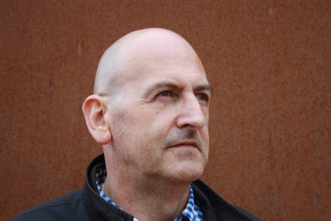

Basque Poetry
Rikardo Arregi
I DO NOT KNOW WHO 'I' IS
- Again It’s noon on Sunday and I’m leaving home to go to my mother’s. The cold wind forces me to pull my cap down harder so I don’t lose it. I start down the last street, two young people come up to me, showing clear symptoms of still enjoying their Saturday night. When I get closer, one says, waving two fingers as if were holding a cigarette, “¿Tienes... un cigarro? One... one cigarette, please…” “Yeah, sure, here you go,” I answer, a little surprised by the linguistic doubts, from which Basque is of course dismissed. The guy’s “happy” thanks to the cigarette and to the various substances his body is trying to metabolize. He goes on: “Tú eres … tú eres… fucking great… ok.” I’ve been up for several hours and I’ve already metabolized everything I needed to metabolize. “Ok, ok,” I calm him down, I calm myself down. “Tú eres..... where are you from?” “I am Basque,” I am surprised at my own conviction and the reassurance with which I say it. Fucking great...you’re not a foreigner... fucking great.” The effects of certain substances on the level of friendliness towards strangers is well known. I move away. This is not the first time this has happened, it’s not the first time I’ve been taken for a foreigner in the Basque Country. I often feel that my national identity either dissolves or solidifies according to circumstances I have not yet been able to identify. So, I was taken for an Englishman in San Sebastian and Madrid (“you speak Spanish very well for a foreigner!”) not just once, but many times; for an Englishman in Germany, for a German in England; for a Hungarian in an Italian train, which my interlocutor deduced from the language, Basque, in which the book I was reading was written; for a Czech in Paris when I was overheard speaking this language, Basque, with a friend; and even for an Israeli in a small town in Costa Rica, which offended one of the friends I was talking to, of course in Basque, who is a fervent anti-Zionist. The list is so long... - Identities Before talking about national identity, or linguistic identity, or even before talking about my identity as a writer -which is very juicy too-, I feel obliged to talk about my personal identity, which has so many faces to it that it may actually be a non-identity. Especially, when people in the very city I was born in see me as a stranger. Schopenhauer said that there is no emptier pride than the vanity of belonging to a certain people or nation. I don’t think I’ll ever run that risk. After hearing so many people doubt me, I’ve ended up doubting myself too. My first doubts started a long time ago: the moment I became conscious of the fact that my name was the same as my father’s I began to doubt my own personal existence, I began to understand that my own personal identity was going to have to be built up with resolute determination, that it was going to be hard-work. Of course, that confusion of names reached its most terrible point during my adolescence, when the names written on letters, spoken over the phone, whispered in the streets were so important; when they were too transcendental. The fact that it’s our custom to use two surnames, the father’s and the mother’s, didn’t help matters for people, since my father’s complete name, Ricardo Arregi Ortiz de Zarate, and my name, Ricardo Arregi Diaz de Heredia, were both confusing. Those compound surnames, so characteristic of the small Basque region from which I come, Alava, don’t help to clarify misunderstandings. I started to use the Basque spelling of my name, Rikardo, during that confused adolescence in which I tried to know whether I was worthy of a distinctive name by which to identify myself; I needed an identity. The next mix-up emerged when I published my first texts in the Basque language. I soon realized that there had already been another Rikardo Arregi in Basque literature. A Rikardo Arregi that was already dead when I began writing and that may deserve a space here so that other people can know about him. This Rikardo Arregi was born in 1942 and died when he was twenty-seven years old, on the day Armstrong and Aldrin stepped on the moon, when the dictator Franco was still alive. He wrote mostly essays and newspaper articles and his main concern was teaching Basque-speaking people to read and write. Today there is even a prize for Basque journalism named after him, and his hometown, Andoain, has a street called Rikardo Arregi. So because of all this, the first poem I read in Basque, or the first one that comes to mind in my imagination, is Nire izena (My name), by Gabriel Aresti. It had such an impact on me that it almost hurt, it was as though Basque literature was welcoming me in, talking precisely about names, about lost names written on gravestones, about forgotten names. Much later, another poem, this time by Pushkin, about names written on gravestones in a language that nobody understands also seemed both too beautiful and too painful at the same time. I recreated it in a poem in my book Kartografia: Zer esan nahi du zuretzat nire izenak? Oroigarri bakarra paper batean utziriko aztarna hila hilartitzaren antzera, letra arraroz idatzita inork ulertzen ez duen hizkuntza batean. What does my name mean to you? As the only memory, a lifeless trace left on paper, Like an epitaph written in strange characters, in a language that nobody understands. Back then, people asked me whether I was related to this Rikardo Arregi, whether I had anything to do with him. I felt frightened, surrounded by living or dead people with the same name as me. The publishers decided that my complete name, with both surnames, would appear on that first book of poems I wrote. But the confusion goes on. On one occasion, a Slovenian writer looked at me as if I were some kind of zombie because he had seen on the Internet that Rikardo Arregi had died years ago. My publisher in Spanish decided that Spanish readers would not know of the existence of the other Rikardo Arregi. Nowadays, publishers, critics, and university professors discuss, with me, how I should appear, as if I were somebody else. Je est un autre. (I’m somebody else). Rimbaud, old chum, it seems I understand things less and less, or more and more, who knows. I´ve begun here with doubts about my national identity. One should point out that Basque men and women, when they first meet someone, after asking their name, always ask where are you from? In France, they ask tu fais quoi dans la vie? to find out what you do for a living (and about your economic situation), but we (now I identify myself) ask about your origins. can often guess where someone is from their accent or their dialect. Other times, you offer profuse explanations about your own origins, your parents’ origin, or when you learned the language: in the family? Was it only spoken by one of the parents? Was it learned in an ikastola (Basque school)? And you talk about feelings of belonging. Even in when you answer the question in a survey, you can choose from several options: I feel more Basque than Spanish, more Spanish than Basque, Basque and Spanish, Basque and Navarrese, French and Basque, only Basque….. Another anecdote. A year ago, I started to go to English lessons; after about a month, I heard to some classmates speaking in Basque about notes, homework, and books, so I joined the conversation. One of them couldn’t believe her ears; she asked me again and again whether I was speaking in Basque (in fact, the conversation was taking place in that language), whether I was Basque (that is, whether I was born in the country), whether my parents were Basque. We walked for half an hour and she kept asking me the same questions. But you don’t look Basque, this was her main argument or her main obsession or concern. But those words encode great part of the meaning of our world. Maybe, the most important thing is not to be, but to look like. There are large parts of the province where I was born that do not look like the Basque Country, that’s what everyone says (this looks like Castile); a large part of the Basque Country does not look Basque; it does not correspond to the landscape that has become so stereotypical. Anyway, many Basque people don’t look Basque. It has become a commonplace in our days is to talk about the diversity of Basque society, but all this talk about diversity which is so obvious hasn’t caught on in our mentality. We may know it but I doubt we actually live it. There are Basques that don’t speak Basque, Basque-speaking people that aren’t nationalist (more and more each day I think), people who come from all kinds of backgrounds that speak Basque; the variations are endless. Well, perhaps not endless, but there are at least as many variations as there are people. Still, the situation does undergo its changes. Many people in my city (which has two names, one in Spanish and the other in Basque) thought I was born in a more Basque-speaking place since, until now, being from Vitoria(-Gasteiz) and speaking Basque did not seem to quite match. Until a short time ago, to speak Basque was to be abertzale (a patriot or nationalist) by definition. Today, and due to one of the minor controversies we are so fond of, some patriots denounce those who, despite writing in Basque, are Spanish, work for the Spanish and, what is even more surrealist, despite writing in Basque are against the language. To begin talking about literature, we should note that surrealism, a certain kind of political surrealism -speaking in imprecise terms, - has been the literary trend with the highest prestige within Basque poetry in the last third of the 20th century. One does not know for certain whether one is Basque or not, or when it is that one is Basque, or whether one looks like what one is, or when it is that one looks like something or other. Although I try, it’s almost impossible for me to define the criteria regarding the issue of looking like or not looking like a Basque. Life, of course, unstoppable and cruel as it is, reminds us time and time again of the diversity of everything. But Basque people are obstinate (another immemorial platitude) and we’re still at a loss on this issue. Speaking Basque and being a patriot, as I’ve already said, have gone hand in hand. On this issue, what you say or the decisions you make on your own are not as important; what’s important is, as is almost always the case, what others say and decide for you. On the same day and in more or less formal venues, at ten in the morning I heard someone say I was not a very patriotic person while at six in the afternoon another person said I was too patriotic. Having always heard so many doubts and questions about my identity, I’m not worried anymore; I’m simply fascinated to see how far it can go. It doesn’t matter to me now to know who I am; the issue itself even seems absurd to me. I’m nobody, I’m nothing, I’m what you want me to be, I’m what I have now chosen to be at this very moment, knowing that it’s neither true nor false, just the avatar I choose or someone chooses for me for this moment. Paraphrasing Groucho Marx I could say, this is what I am, but if you don’t like it (or if I don’t feel like it), I can be something else. - Who is ‘I’? The question of my name wasn’t my only problem in the literary world. I’m invited to the University of Santiago, in Galicia, to talk about poetry or criticism. I’m told someone will be at the airport waiting for me. I arrive a little nervous, look around, the rest of the passengers have already gone, they’ve found their suitcases and friends. Little by little, I’m left alone, there is no embarrassing sign with my name. Suddenly, I see two people who seem to be (well, I too am guided by prejudice and appearances) writers, call them intellectuals, or whatever, I don’t know; they look at the passengers, they appear to be looking for someone. I walk towards them. “Ah, here you are, you don’t look like a poet.” This is the first thing I hear, and I almost, almost prefer it. The word poet has so many negative connotations. Moreover, as somebody once said, one is a poet when one writes what we call a poem. But it’s still annoying not to look like a poet when you’ve been invited somewhere precisely because you are a poet. You feel almost like a fraud, as if you were letting people down, as if you didn’t quite make the grade. Neither Basque, nor Basque-speaking, nor a poet. I don’t look like anything. To top it off, I remember that, on two different occasions and in two different cities, the bouncers at two gay pubs took the time to explain the nature of the pubs I was about to enter, since I didn’t look ... But, here I am before you, invited as a writer, as a poet most certainly, and in the Basque language. I have no other choice than to assume, even vindicate, that I’m all of these things for a time; that, for a time, I assume this avatar, which doesn’t bother me, and that it’s not the first time. In recent years, I’ve had the chance to take part in translation seminars, presentations of books, and readings outside the Basque Country. My main fear in those places is probably the questions about Basque politics or, more crudely, about terrorism. I have the impression that this is the Basque Country’s most striking export. But it isn’t the question I’ve had to answer most frequently. Fortunately, the young European poets I’ve met were more interested in literature and the political issue was left in second, third, or fourth place. Nevertheless, I’m aware of the fact that politics are an important part of our lives and that they’re always reflected, in one way or another, in the literature we produce. The most common questions are about the language: so I have had to patiently explain that Basque is not like Catalonian, that it is not a Romance language, that it is not a Celtic language. I’ve had to slip and slide along the most repeated stereotypes about the language and I’ve had to talk about the Caucasus, the Berbers and Atlantis. I could hardly recognize myself talking about those things. I’ve even had to comment on the by now irritating phrase by Voltaire about how the Basques are a people who sing and dance at the foot of the Pyrenees. Nobody seems to remember that this sentence appears in a philosophical tale by Voltaire entitled “Princess of Babylon”, which is set about a thousand five hundred years before Christ. All this business about the antiquity and the mystery of the language is of no interest to me when I put on my Basque-writer’s clothes; it doesn’t solve anything for me, it doesn’t help me. Moreover, quite often it’s something against which I am forced to intervene. Basque is a language in which people communicate with each other, write and read (not very much, indeed). A standing stereotypes about the antiquity and mystery of the language brings many people to ask about its oral tradition, specifically about the oral tradition of the verse improvisers. In this tradition, I am part of the so-called public at large, and it doesn’t interest me much as a writer of poems. Maybe that’s what the world expects from Basque writers: exoticism, antiquity, millennial traditions, forgotten quotes by Voltaire or Montaigne: the one in which, talking about communication between human beings and animals, he finally says: “This no great wonder that we don’t understand them (we do not understand the Basques or the troglodytes either).” In the postmodern global world, it’s tempting to achieve a certain level of notoriety by falling back on the specific exoticism that Basque may have, but I think the risk of slipping into mystifications is extremely high. Ethnography is one thing, literature is another. In Basque literature, there is a melancholic yearning for a supposedly lost world, which neither history nor archeology confirm and which, in its most delirious extreme, has gone as far back as the Neolithic Age. But the Basque Country is a quite normal place in Western Europe: cities, industries, natural parks, technological areas, motorways, shopping malls... Only 3.5 % of the population works in agriculture or livestock, but we like to see ourselves at cheese or potato festivals wearing typical outfits, and the public television organizes reality-shows that try to recreate rural life a hundred years ago. Pretense. A word that we use more and more to talk about ourselves. People use it when talking about Basque literature, about our literary system too. I used to worry more about this issue, but now I think it suits our time: more look like and less be. - What does ‘I’ write? So, what do I write if I have not much ‘I’? I decided to write in the Basque language and I don’t quite remember the mechanisms that led me to this decision. It’s true, at first I did write some poems in Spanish, when I was fifteen –horrible poems, definitely-, but I soon decided to do it in Basque. Perhaps it was a way of building an identity for myself, which I needed; a personal, political, cultural, collective… identity, but it was very hard; I published my first book of poems when I was thirty-four years old. It wasn’t easy to make an avatar for myself as a Basque poet, and until I read Izuen gordelekuetan barrena (In the shelters of fear) by Joseba Sarrionandia, I didn´t dare write what I wanted to write. I was able to avoid having to struggle with the identity of the young poet, and I’ve always been happy about that. I guess it’s easy to figure out that I’ve written and write many poems using monologues, that is, placing the poem in another’s voice. When one isn’t very sure of being who one appears to be, a good resource is to adopt other personalities, other masks, other voices. The word I’m most afraid of using is probably ni (I in Basque) and I can guarantee the reader that ni can be anything. In the book of poems I am currently writing, Paul Valerie’s phrase, Il y n’a pas de vrai en matière de moi (There is no truth in matters of I) will have an essential place. And it isn’t a question of aesthetics, of decadence or philosophy. It is not a posture and it certainly isn’t an imposture. It’s a vital question, a question of everyday experience, which persistently comes up again and again. Maybe I should give up literature and become a Buddhist monk and obliterate the ’I’ still left in me after the fire of annihilation, but I don’t see any of my avatars doing these things. I don’t claim to have an exclusive in this business of questioning ones identity. It seems to me that this happens to most people in our postmodern world. Readers compulsively ask whether the novel or the poem they have read is real, whether the things it tells about have really happened, whether they have any autobiographical elements. Nowadays, people like memoirs and confession books more than ever, I think. Beyond curiosity and the hunger for gossip, which have always existed, the reader seems to want to find individuals. This is a huge paradox: in the kingdom of individualism, there appear to be fewer and fewer individuals. Maybe many of us feel less and less like individuals. The best, or the worst, part is that we like it. - Spanish, English, and other languages It’s not easy for me to introduce myself as a Basque poet, since I have my own doubts about my personal identity, my identity as a poet and as a writer. But, lately I’ve had to shoulder all these identities. Some of my poems have been translated into Spanish, English, and other languages. Bernad Cassen´s quote on the dictatorship of the English language is problematic. I’m not so sure that writing in a particular language determines the concepts that are to be expressed in that language, nor, of course, an exclusive conception of the world. English is the language of President Bush, but it is Chomsky’s language as well; and the concepts and worldviews of these two individuals could hardly be more different. In my experience in the translation workshops organized by Literature Across Frontiers, English was simply a bridge-language we used to understand each other. Literature Across Frontiers (www.lit-across-frontiers.org) is an organization that promotes the understanding and exchange of literature written in European and Mediterranean languages with very few speakers (be they totally official and national like Slovenian, Latvian, or Maltese, for instance, or having other kinds of administrative status depending on the countries, like Basque or Catalonian,). The dissemination of Basque literature outside its own linguistic field is very recent, and it undoubtedly started with Bernardo Atxaga. I say outside its linguistic field because there are many Basque people who only speak Spanish or French. In fact, I think that many translations of Basque works into Spanish take that fact into account, that there is local Basque market, and recently publishers that traditionally published in Basque now want to attract that potential audience. I think translation into Spanish is a fairly obvious path for Basque writers from, let’s say, the Spanish Basque Country. There are already several Basque poetry anthologies in Spanish and several branches of the Instituto Cervantes are extremely interested in Basque poetry. I particularly remember the centers in Manchester, Ljubljana, and Vienna, but there are others, such as, recently, the one in Albuquerque, New Mexico. The first one even contributed to the publication of Six Basque Poets in 2007. We must admit that the temptation of using the English language is great, not only because it can reach the English speaking audience, but also because, as the ex-Yugoslavian writer Dubravka Ugresic says, English is today what Latin used to be, a language for communication among people from very different origins, and this is very important in Europe. It would be difficult for a potential Slovenian reader to come across Basque literature unless there was a bridge-language. I might have not used the best example because, in fact, there already is an Anthology of Basque Literature in that language: Etzikoak, Antologija sodobne baskovske knjizevnosti; and another anthology exclusively for poetry: Branil bom ocetovo hiso, Antologija moderne baskovske poezije. Thanks to the English language as a bridge-language, I recently saw Basque poems in Welsh in the magazine Tu Chwith. Some might stifle a chuckle hearing these languages mentioned, but for a writer in the Basque language – I think that for any Basque speaker-, all of this is very important. I’m convinced that we’ve developed a kind of sensitivity towards other languages that, like Basque, have a relatively small number of speakers. We disdain nothing. It’s true that I feel extremely satisfied when I see my poems in Spanish, English, German, or in any other of the “major” languages, but one finds a special pleasure when seeing those undecipherable words. And anyone with a minimum amount of literary sensitivity will be interested in the literature written in that language. The best is not always in English. I dare say, for example, that the most interesting gay poets now are probably in Europe and writing in so-called minority languages. - Provisional end For the time being, I intend to continue cultivating this avatar of the Basque poet; I mean precisely that of a person who writes poems in Basque. This is my essential avatar, although people complain (it’s incredible) that it has been a long time since I’ve published a book of poems in Basque. I have no doubts, it will be in that language and it will be poetry. I’ll put up with the ridiculous question all writers in Basque have to put up with stoically: why do you write in Basque? If you want a Basque writer to take a disliking to you, all you have to do is ask this question. The best answer I’ve heard recently was given by Jokin Muñoz. He said he writes in Basque because he feels like it, and because his writes better in Basque than in Spanish. To the question “why poetry?”, the answer would probably be the same: because I feel like it and because I write poetry better than anything else. I also have an avatar that writes op-ed articles in Basque, and another one that coordinates a reading workshop that meets once a month to talk about a book written in Spanish or translated into Spanish at the library in Arrasate-Mondragón, one of the most abertzale (nationalist, patriotic) towns in the Basque Country. And I even had an avatar that wrote op-ed articles and literary reviews in Spanish. And here I am, trying hard, groping at a way to explain “myself”, in my own mother-tongue. Writing poetry in Basque is a kind of freedom, and since it is a freedom, since it’s freedom, it becomes a permanent exercise in building ‘I’s (it is necessary to be able to say ‘I’ in plural) and others at the same time. It may not be very Basque according to certain criteria. By the way, I wouldn’t mind knowing whether anybody knows what ¨basqueness” consist in. I’m always ready to learn and even if I’m not capable of becoming a Basque, I’d be more than happy to look like one. When all is said and done, that’s what really matters: to appear to be. I would really like to look Basque and to stop having these all these little problems. - References - Aresti, Gabriel. Harri eta Herri. Zarautz: Susa, 1986. - Bazka, online magazine. Jokin Muñoz: Abenduak 28, 2007; 8:52 pm. www.bazka.info/?p=226 - Bramil bom ocetovo hiso, Antologija moderne baskovske poezije, Ljubljana: Aleph, 2007. - Etzikoak, Antologija sodobne baskovske knjizevnosti, Ljubljana: Drustvo slovenskih pisateljev, 2006. - Mallet, Robert (ed.). Correspondence d’André Gide et de Paul Valéry, Paris: Gallimard, 1955. - Montaigne, Michel de. Essais, Livre 2, Paris: Flammarion, 1993. - Olaziregi, Mari Jose (ed.). Six Basque Poets, Todmorden: Arc Publications, 2007. - Pushkin, Alexandr. Antología lírica. Madrid: Hiperión, 1997. - Rimbaud, Arthur. Poésies: Les cahiers de Douai, Poésies, Lettres dites du voyant, Un saison en enfer, Illuminations. Paris: Hatier, 2007. - Sarrionanindia, Joseba. Izuen gordelekuetan barrena, Bilbao: Bilbo Aurrezki Kutxa, 1981. - Schopenhauer, Arthur: El arte de vivir bien. Editorial Central: Buenos Aires, 1957. - Tu Chwith. Cyfrol 27, Newid, Caerfyrddin/Carmarthen, 2007. - Volgako Batelariak, online magazine. Dubravka Ugresic-i elkarrizketa. http://eibar.org/blogak/volga/archive/2005/10/27/56 - Voltaire. Candide et autres contes, Gallimard: Paris, 1992.
66 LINES FROM THE CITY UNDER SIEGE
While leisurely crossing the streets and squares of Gasteiz
like I do every day, to go to work or visit friends,
I realise suddenly, distraught,
that to do this here
is very dangerous most days
and, looking at the rooftops I try to figure,
with cold eye and tremulous thought,
which one would the sniper choose,
where might the bullet that turns
my head into a black flower come from.
Isn’t that square suspiciously wide. And that street.
What about all the tall buildings that surround the park.
I have heard there no longer are
any trees left in the parks of Sarajevo,
that people have used them to heat their houses,
and distraught, I realise suddenly
I couldn’t possibly light a fire anywhere in my flat.
And besides, my street is full of official buildings,
and given that government offices are so important
in times of war,
I realise suddenly, distraught,
that my street might well have turned into a mud field;
my house in Sarajevo
might well have disappeared.
How does my other self in Sarajevo manage?
Does he still go to work, for example? Or
are all those normal habits long gone?
And distraught, I realise suddenly
that the schools are probably closed,
and mine, in any case, is on the other side of the railway line, near the station,
and railway lines and stations are the kind of places that get taken
in times of war.
The long awaited news and letters
I no longer write never reach anywhere.
How do I do the shopping in Sarajevo?
Ever since a kilo of potatoes went up to 10 marks
I spend hours adding and subtracting,
yet the result is always hunger.
And suddenly I realise, distraught,
that hunger, cold, fear, queues, bad luck,
are common currency
in times of war.
And now the city is divided,
its internal borders are wounded,
and the blood oozing from them isn’t metaphorical;
from the railway and beyond lie our enemy friends,
from here to the bridge our friendly enemies.
How do I adjust to the lot that has befallen me?
And distraught, I realise suddenly
that my mother lives in the West and I, unfortunately, in the centre,
and that the two areas, and my brother’s too, might be further separated
in times of war,
and that such separations are cruel and unpredictable,
and I am here on that particular today because I ate at yours.
The geography of Gasteiz isn’t that inappropriate strategically
the artillery would easily find a good place.
Zaldiaran or the mountains of Gasteiz
might not be as spectacular as the Ilidža range,
but bombs thrown from there can hit targets just as well.
And all the city-less citizens
can go out on the roads on foot with little backpacks on,
and boil in summer and freeze in winter,
get lost on roads that lead nowhere,
and seek a haven that never was;
the key is to stay alive till the peace treaty is signed.
I hope the devil won’t add another 6 to that.
66 LERRO HIRI SETIATUAN
Gasteizko plaza eta kaleak lasai zeharkatzean,
egunero bezala lanera edo lagunengana,
bat-batean asaldaturik pentsatzen dut
hau bera han egitea
arriskutsua dela oso egun askotan,
eta etxegainei begiratuz kalkulatzen dut,
begia hotz, dar-dar gogoa,
zein aukeratuko lukeen franko-tiratzaileak,
nondik etorriko ene burua
lore beltz odolezko bilakatuko duen bala,
susmagarria baita plaza zabalegi hori. Kale hura.
Etxe handiz inguraturiko parkea.
Entzun dut Sarajevoko parkeetan
zuhaitzik ez dagoela jadanik,
biztanleek moztu baitituzte etxeak berotzeko,
eta bat-batean asaldaturik pentsatzen dut
ez dudala nik etxean sua egiteko leku egokirik.
Gainera, ene kalea eraikuntza ofizialez beterik dago,
eta gobernu-bulegoak garrantzizkoak omen direnez
gerra garaian,
bat-batean asaldaturik pentsatzen dut
kalea istilugune bihurtu eta
suntsiturik egon daitekeela agian
Sarajevoko ene etxea.
Nola moldatzen da ni naizena Sarajevon?
Lanera doa oraindik, adibidez? Ala
ohitura arrunt horiek guztiak aspaldi desagertu ziren?
Eta bat-batean asaldaturik pentsatzen dut
ikastetxeak itxita egongo direla ziur asko;
nirea, gainera, trenbidearen bestaldean dago,
geltokitik hurbil,
eta trenbideak eta geltokiak kontrolatu beharreko gauzak omen dira
gerra garaian.
Luzaro iguriki iristen ez diren eskutitzak
eta berriak ezin izkiriatu.
Nola egiten ditut erosketak Sarajevon?
Kilo patatak hamar marko balio duenetik
orduak ematen ditut batuketak eta kenketak egiten
baina emaitzak gose dira beti.
Eta bat-batean asaldaturik pentsatzen dut
gosea, hotza, izua, ilarak, zori txarra
ohitura ezin arruntagoak direla
gerra garaian.
Banaturik dago jada hiria,
barne mugak zauri dira
eta zauri horien odola ez da metafora,
trenbideaz haraindi etsai lagunak,
zubiaz honaindian lagun etsaiak.
Niri egokitu zaidan egoerari nola egokitu natzaio ni?
Eta bat-batean asaldaturik pentsatzen dut
ama sartaldean bizi dela eta ni berriz erdialdean
eta bi auzoak, anaiarena ere bai, urrunago egon daitezkeela
gerra garaian,
eta banaketa horiek ezustekoak direla eta ankerrak,
gau hartan zure etxean afaldu nuelako nago hemen.
Ez da falta Gasteizko inguruetan
leku egokirik artilleria kokatzeko,
Zaldiaran edo Gasteizko mendiak
ez dira Ilidza mendia bezain ikusgarriak izango,
baina handik jaurtiriko bonbek lan ona egin dezakete.
Eta gero errepideetara oinez irten, pardeltxoak bizkarrean,
hiritar hirigabeak,
udan bada sargori, neguan bada izotz,
inora ez doazen bideetan galdurik,
inon ez dagoen babesaren bila;
bake-itunak sinatu arte bizirik irautea da kontua.
Ez dezala deabruak beste 6 bat idatzi.
LOVE POEM OR SOMETHING XVIII (THE BASQUE EXAMPLE)
As we crossed the square near my house you suddenly stopped behind us to look at that sculpture I don't much like, what is what written all over your face. I told you about Xabier Munibe then, about the fleeting Enlightenment we had in the 18th century, about Basque theatre, about the Knights of Azkoitia, Samaniego, Bergara, about encyclopaedias and light, and the darkness that used to hide the light, about the Society of Friends of the Basque Country, about Olagibel and neoclassicism. Your eyes were so unflinchingly bright, your arms raised, steadfast, pointing at the symbol carved on the stone, the three hands, the three hands, you kept saying. You burst out laughing as you tried to read the motto, ir-fratz... IRVRAC BAT, while vainly I tried to explain how now we would write “hirurak bat”, how we pronounce it and that it means “the three are one”, but by then you had climbed the statue and were hugging the hands and the words while we watched from below in disbelief, as you screamed hirurak bat like us, hirurak bat like us, that we should have it tatooed, but that maybe instead of the hands we should have three hard cocks, adopt it as our very own very unapologetic coat of arms. Then you asked how we say forever in Basque and whispering the words hiruak bat betiko, hiruak bat betiko, we hugged, feeling proud and strong, while the Count of Peñaflorida looked away very discretely. Since that day, at the end of your messages you always sing: HIRUAK BAT BETIKO.
AMODIOZKO POEMAK EDO, XVIII (EUSKARA IKASBIDEA)
Etxe ondoko plaza zeharkatzerakoan atzean geratu zinen geldi bat-batean gehiegi gustatzen ez zaidan eskulturari begira, hori zer zen galdera aurpegian. Xabier Munibez hitz egin nizun nik orduan, hemezortzigarren mendean izan genuen ilustrazio apurrez, euskal antzerkiaz, Azkoitiko zalduntxo haietaz, Samaniegoz, Bergaraz, entziklopediaz eta argiez, eta argiek ezkutatzen zuten ilunaz, Euskalerriaren Adiskide Elkarteaz, Olagibelez eta neoklasizismoaz. Dirdira ez zen itzaltzen zure begietan, zure besoak temati seinalatzen zuen harrian zizelkaturik dagoen ikurra, the three hands, the three hands, errepikatzen zenuen. Azalpen gehiagotan galdu nintzen barrezka lema irakurtzen hasi zinenean, ir-fratz… IRVRAC BAT oraingo euskaran “hirurak bat” idazten dela, nola ahoskatu behar den, zer esan gura duen, baina harri gainean zeunden igota, eskuak eta hitzak estu besarkatzen, eta gu behean harriturik zure oihuak entzuten: hirurak bat like us, hirurak bat like us, tatuatzeko gogorik zenuela, baina agian eskuen ordez hiru zakil paratu beharko genuela, lotsa barik, gure bizitzen armarrietan. Gero for ever euskaraz nola esaten den galdetu zenigun, eta hitzak xuxurlatuz hirurak bat betiko, hirurak bat betiko, elkar besarkatu genuen harro, indartsu, Peñafloridako kondeak beste aldera diskretuki begiratzen zuen bitartean. Zure mezu guztiak, orduz geroztik, hala bukatzen dira beti: HIRURAK BAT BETIKO.
CONTENTS

ABOUT THE ARTIST
Rikardo Arregi Diaz de Heredia published his first book of poems Hari Hauskorrak (Fragile threads) in 1993. He got the Critics Prize to that book. In 1998 he wrote Kartografia (Cartography) in Alberdania, Critics Prize, it was translated to Spanish, Cartografía in 2000. His poems can be found in various anthologies of Basque poetry published in other languages as English (Six Basque Poets, Arc Publications, 2007). He has translated into Basque the Spanish poet Ernestina de Champourcin, the Portuguese poet Jorge de Sena and lately Jospeh Brodsky’s Watermark in 2022. He has worked in the collective book Desira desordenatuak. Queer irakurketak (euskal) literaturaz, a study on gay issues in Basque literature. He was a member of the editorial board of the online literary magazine Volgako Batelariak. His last book of poems is Bitan esan beharra (It Must Be Said Twice), published in 2012, Spanish Critics Prize and Lauaxeta Prize, translated to Spanish (Debe decrise dos veces, Salto de Página, 2013). He has been writing weekly opinion columns in the Basque press for years. He is corresponding academician of Euskaltzaindia, the Royal Academic of Basque Language.